Nerve Injury
- Four questions for any suspected nerve injury: Is it a nerve injury? Where is it? How bad is it? What now?
- Seddon grades. Neurapraxia: only the myelin is hurt (compression); it recovers in weeks (6–12) once the cause is removed. Axonotmesis: the axon is cut but the epineurium is intact (crush, stretch); it can recover on its own, slowly, at about 1 mm a day (1 inch a month). Neurotmesis: the epineurium is disrupted (cut); there's no spontaneous recovery, so refer early.
- When an axon is cut, the part beyond the injury dies back (Wallerian degeneration), and its muscles are denervated, which needle EMG can detect. With neurapraxia, the muscles aren't denervated; they just can't be activated.
- Root vs named nerve. Radiculopathy: neck or back pain radiating down the limb, fuzzy dermatomal sensory change, and weakness in a myotome (muscles of different nerves that share the root). Mononeuropathy: a well-defined patch of sensory loss, and weakness only in that nerve's muscles.
- Numb thumb: carpal tunnel or C6? Weak abductor pollicis brevis (median nerve, C8) means median. A weak biceps and a numb lateral forearm (musculocutaneous nerve, C6) mean C6.
- EDX = nerve conduction studies + needle EMG. On nerve conduction, the size of the response = the axons and its speed = the myelin. EDX can localize the lesion, grade it and give a prognosis. It can't diagnose a rotator cuff tear or a stroke. Foot drop with a spared short head of biceps femoris = common fibular nerve at the fibular head. If gluteus medius, tibialis posterior and the paraspinals are also involved = L5 root.
Learning Objectives
- Prognosticate recovery from a peripheral nerve injury.
- Differentiate between neurapraxia, axonotmesis and neurotmesis and describe the expected timeline of recovery for each.
- Describe an approach to localizing peripheral nerve pathology (how you'd tell a terminal branch lesion from a root lesion).
- List the tests used to diagnose nerve injuries and what each one tells you.
Dr. Michael Payne (Physical Medicine & Rehabilitation), about 45 minutes over three recordings, plus three practice questions. It builds on the somatic nerve in 7.1, the brachial plexus in 8.1 and the fibular nerves in 9.7. Monday afternoon's small group is on nerve and soft-tissue injury.
The Somatic PNS and Nerve Structure
The peripheral nervous system is somatic plus autonomic. The somatic part does two jobs: it carries afferent signals from skin, muscle and joints (pain, proprioception) up to the CNS, and it carries efferent signals down to skeletal muscle. A "nerve" in the anatomy lab is many axons, wrapped in layers. That redundancy explains why a partial injury causes some weakness but not complete paralysis.
| Layer | Wraps |
|---|---|
| Endoneurium | Each axon (with its Schwann cell): a protective tube |
| Perineurium | Each fascicle (a bundle of axons) |
| Epineurium | The whole nerve: a bundle of fascicles, with blood supply and other connective tissue. It's the layer a nerve surgeon works at under the microscope. |
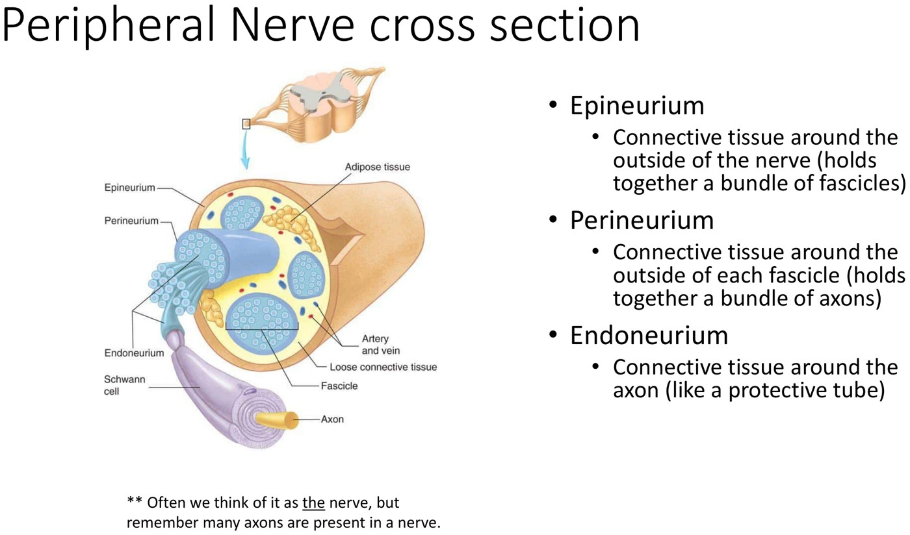
How Bad Is It? The Seddon Classification
| Grade | What's damaged | Typical cause | Recovery |
|---|---|---|---|
| Neurapraxia | The myelin sheath only; the axon is intact | Compression | Good. Remyelination usually takes weeks (6–12) once the cause is addressed. |
| Axonotmesis | The axon, with varying damage to the endoneurial tube and perineurium; epineurium intact | Crush, stretch | Can recover on its own, slowly: about 1 inch a month (1 mm a day), guided by the intact tube |
| Neurotmesis | The epineurium: the nerve is in discontinuity | Cut | None on its own: with no tube to follow, regrowing fibres wander off course. Needs surgical repair. |
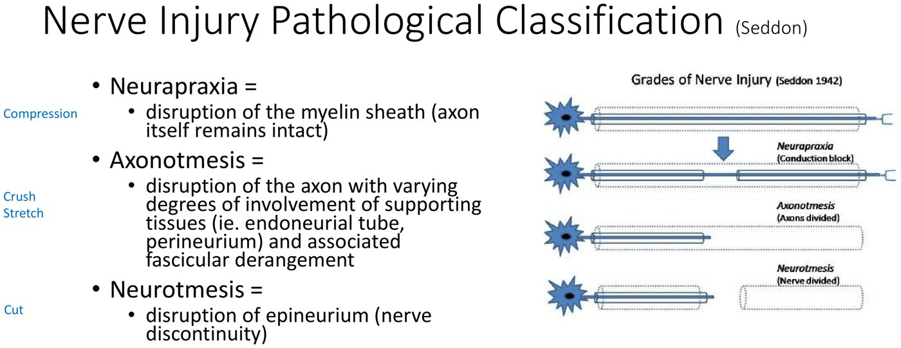
Seddon's three grades and their mechanisms. Slide from the deck.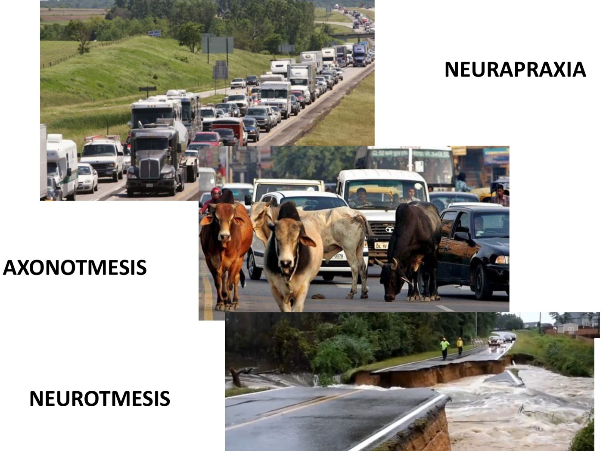
Dr. Payne's road analogy. Neurapraxia: a traffic jam; the road and the cars are fine. Axonotmesis: the road is intact but the traffic is blocked; once the block clears, it flows again. Neurotmesis: the road is washed out, with nowhere for traffic to go. Slide from the deck.Myelin lets the signal jump from node to node (saltatory conduction) and keeps it insulated. Damaged myelin slows conduction or blocks it entirely. Classic example: someone drunk falls asleep with an arm over a chair, compressing the radial nerve, and wakes with a wrist drop that can last weeks. If only the myelin is hurt, the prognosis is excellent.
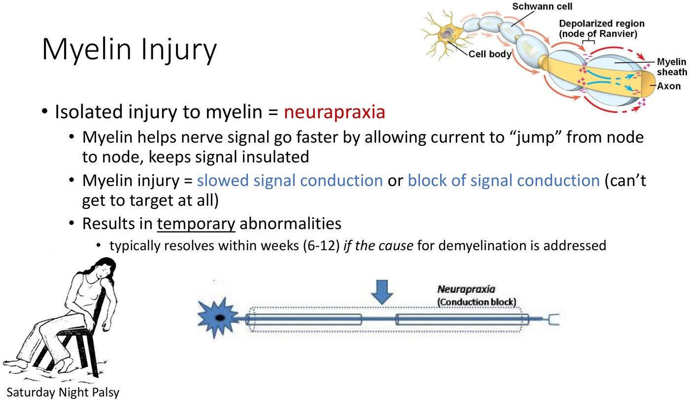
Neurapraxia and Saturday night palsy. Slide from the deck.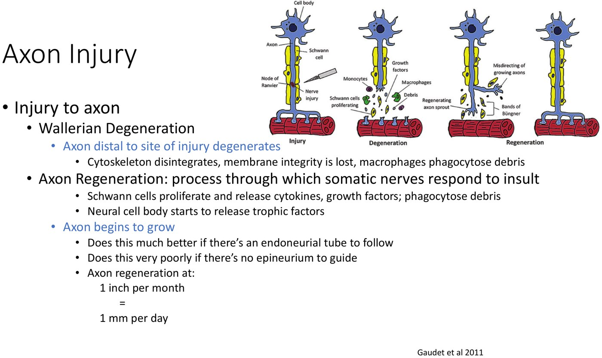
Wallerian degeneration, then regeneration. Slide from the deck (Gaudet 2011).Axon injury. The axon beyond the injury disintegrates: the cytoskeleton breaks down, the membrane fails and macrophages clear the debris (Wallerian degeneration). The muscles it supplied are left denervated. Then Schwann cells proliferate and release growth factors, the cell body releases trophic factors, and the axon starts to regrow. It does this much better with an endoneurial tube to follow, and very poorly with no epineurium to guide it. Do the maths: a lesion at the elbow has to regrow about 30 cm to reach the small hand muscles, so it takes 10–12 months to know whether it will.
Where Is It? Localizing the Lesion
| Level | Name |
|---|---|
| Anterior horn cell | Motor neuronopathy |
| Spinal nerve root | Radiculopathy |
| Brachial or lumbosacral plexus | Plexopathy |
| One named nerve, anywhere along it | Mononeuropathy |
| Peripheral nerves diffusely | Polyneuropathy |
| Radiculopathy | Mononeuropathy | |
|---|---|---|
| Lesion | A spinal nerve root, typically compressed in the intervertebral foramen ("pinched nerve") | A named peripheral nerve, typically compressed at a common site (carpal tunnel, ulnar nerve at the elbow) |
| Pain | Neck or back pain radiating down the arm or leg | Numbness, tingling, possibly burning or electric pain |
| Sensory loss | A dermatome, with fuzzy borders (dermatomes overlap) | A well-defined area |
| Weakness | A myotome: muscles of several nerves that share the root; reflex loss | Only that nerve's muscles, not other muscles from the same root supplied by a different nerve |
| Think in terms of | Dermatomes and myotomes | The peripheral nerve map (median vs ulnar vs radial) |
A dermatome is the skin supplied by one spinal root (C6: lateral arm, forearm and thumb). A myotome is the group of muscles supplied by one root, whatever peripheral nerve carries the fibres. C6, for example, reaches deltoid (axillary nerve), biceps (musculocutaneous) and pronator teres (median).
Case: the numb thumb
A patient has frequent tingling, and the exam shows diminished sensation over the thumb. The differential has to include carpal tunnel syndrome and a C6 radiculopathy: the thumb sits in both the median nerve territory and the C6 dermatome. Look outside the overlap:
- Abductor pollicis brevis is weak (thenar eminence, median nerve): its root supply is C8, not C6, so a C6 lesion can't explain it → median nerve (carpal tunnel).
- Sensory loss also over the lateral forearm (lateral cutaneous nerve of the forearm) plus a weak biceps: both are musculocutaneous nerve, C6, outside the median territory → C6 root.
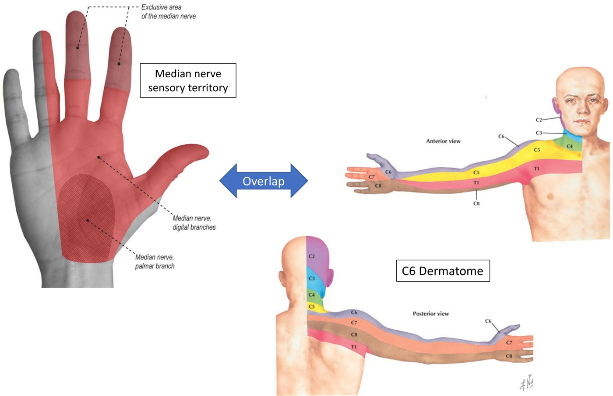
Median territory vs C6 dermatome: they overlap at the thumb. Slide from the deck.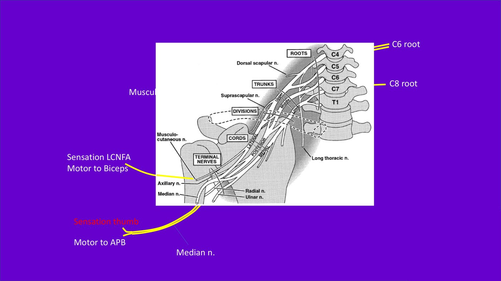
Tracing the fibres. C6 reaches the thumb via the median nerve, and the lateral forearm and biceps via the musculocutaneous nerve. C8 supplies abductor pollicis brevis via the median nerve. Slide from the deck.Why roots and nerves don't line up. The radial nerve leaves the plexus carrying all five roots (C5–T1), but each branch takes only some of them. On the slide, triceps is C7–C8, brachioradialis is C5–C6 and extensor indicis is C8–T1, all carried by the same nerve. (In the surgical EMG series, almost every C7 lesion affected triceps and about half the C6 lesions did; no C5 lesion did.) Charts built from EMG findings in patients whose root lesions were seen at surgery show the real pattern. Dr. Payne's advice: there's no way around some memorization, so learn one approachable chart.
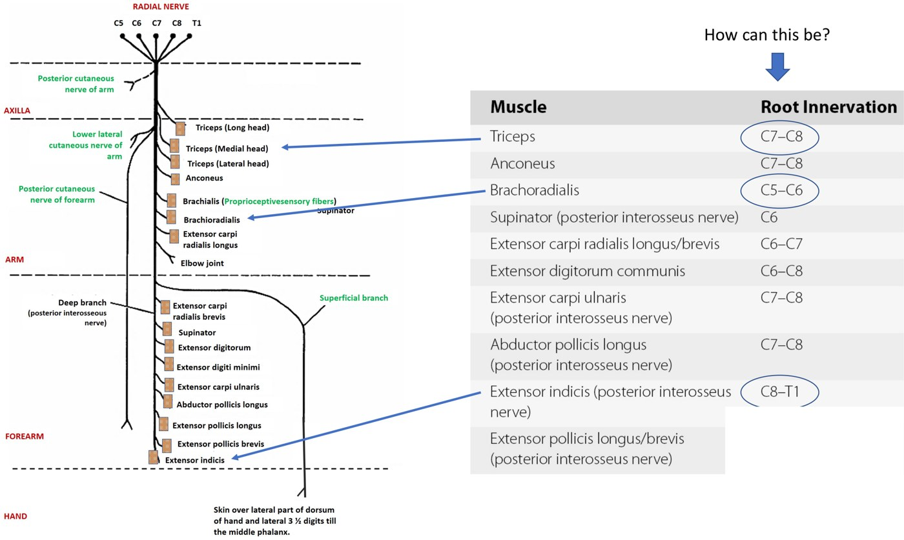
One nerve, many roots: the radial nerve's muscles by root. Slide from the deck.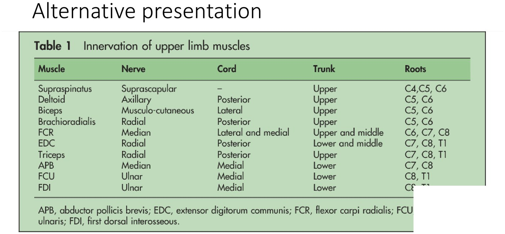
An alternative chart: muscle, nerve, cord, trunk and roots (first dorsal interosseous, cut off at the corner, is ulnar, C8–T1). Slide from the deck.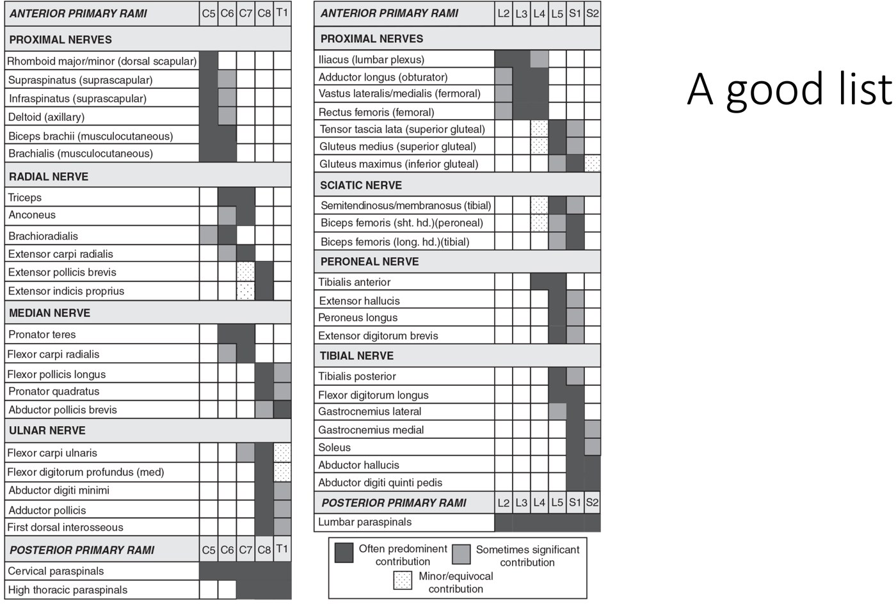
Is It a Nerve Injury? The Clinical Picture
| Negative phenomena | Positive phenomena |
|---|---|
| Loss of sensation, weakness, loss of reflexes | Pain, spontaneous sensations (paresthesia): the "numbness and tingling" |
- Pin down what "numb" means: true loss of sensation, or tingling?
- Other things cause the same symptoms. A torn tendon causes weakness. Cardiac pain radiates down the left arm; don't hunt for a nerve lesion in someone with a cardiac story.
- Pain and weakness are hard to separate. If contracting a muscle hurts, the patient won't push hard. (Try pushing up under a desk with a palmful of thumbtacks.)
- True sensory loss is neurogenic, but it could still be central (stroke, spinal cord) or peripheral.
| Radiculopathy | Mononeuropathy | |
|---|---|---|
| Onset | Sudden or insidious; usually a fairly clear time of onset | Depends on mechanism: chronic compression = insidious (more common); a cut = acute |
| Location | Neck or back pain plus pain down the limb in a dermatome; fuzzy borders | A well-circumscribed area |
| Duration | Months (an injured axon recovers slowly) | Variable |
| Character | Aching or sharp in the neck or back, with electric, burning, zinging pain along the dermatome | Numbness, tingling, possibly burning or electric pain |
| Aggravating / relieving | Worse in some positions (neck extension); better when nerve tension is relieved (hanging the arm overhead) | Worse with things that irritate the nerve (leaning on the elbow, driving, typing); better with position and rest |
| Radiation | Down the limb | May radiate beyond the territory as symptoms, but not as objective signs |
| Associated | Myotomal weakness, myotomal reflex loss | Weakness of that nerve's muscles only |
Spurling's manoeuvre narrows the cervical foramen to reproduce radicular arm pain: the neck goes into extension, rotation and lateral bending (toward the painful side).
Dr. Payne's differential for weakness runs from top to bottom: brain (stroke) → brainstem → spinal cord → anterior horn cell → root → plexus → peripheral nerve → neuromuscular junction (acetylcholine) → muscle → tendon → joint. A break anywhere looks like weakness. A strength exam also needs effort and compliance.
Electrodiagnostic Studies (EDX)
Ordered as an "EMG", but it's two tests, plus a consultation with a physiatrist or neurologist:
| Test | How | What it tells you |
|---|---|---|
| Nerve conduction studies (NCS) | Stimulate the nerve electrically and record the response further along, over a muscle or a sensory nerve | Size of the response = how many axons conduct (half the axons, about half the response; repeat studies show recovery or decline). Timing / speed = the myelin, which is useful in focal entrapments such as carpal tunnel syndrome and ulnar neuropathy at the elbow. |
| Needle electromyography (EMG) | A recording needle in a specific muscle; listen and watch at rest, then during voluntary contraction | At rest: a denervated muscle fires abnormally. On contraction: the firing pattern and the shape of the motor units. It can isolate muscles the exam can't, such as the ulnar half vs the median half of flexor digitorum profundus, or pronator quadratus. |
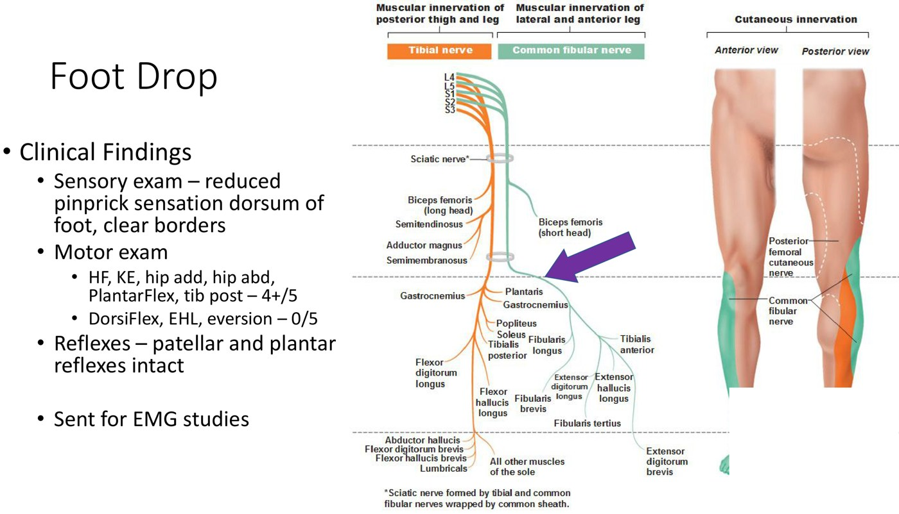
The foot drop case: findings and the fibular vs tibial nerve map. Slide from the deck.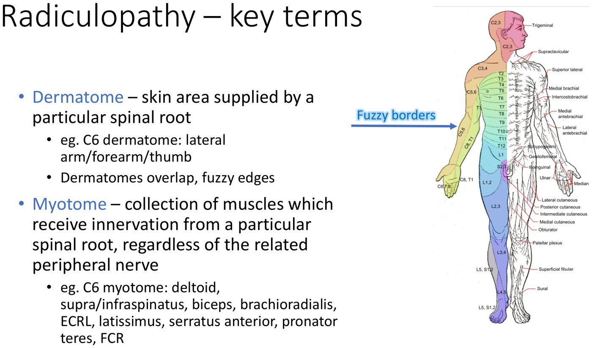
Dermatome and myotome, with the C6 examples. Slide from the deck.| EDX can tell you | EDX can't tell you |
|---|---|
|
A normal study still helps: it points you to those other causes. |
Case: Foot Drop
The horseback rider
Yesterday a rider hit a fence with the right knee, was thrown over and landed on the low back. The knee hurts, and an x-ray shows a fibular head fracture. They can't dorsiflex, extend the toes or evert; plantarflexion and knee flexion are weak but painful. Foot drop = dorsiflexion weakness (can't lift the foot against gravity).
- Sensory: reduced pinprick over the dorsum of the foot, with clear borders.
- Motor: hip flexion, knee extension, hip adduction and abduction, plantarflexion and tibialis posterior 4+/5 (pain-limited). Dorsiflexion, extensor hallucis longus and eversion 0/5.
- Reflexes: patellar and plantar intact.
Only the common fibular territory is affected; the tibial muscles (gastrocnemius, tibialis posterior) work. Where along the nerve? The short head of biceps femoris is supplied by the common fibular division in the thigh. If it's spared, the lesion is below that branch, at the fibular head. When the exam is too painful to tell, send for EDX.
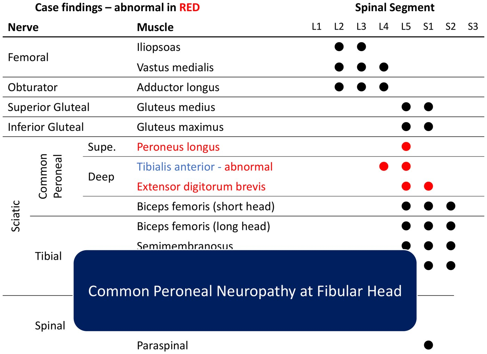
Ending 1: only the common fibular muscles below the knee are abnormal (red), and the short head of biceps femoris is spared → common fibular neuropathy at the fibular head. Slide from the deck.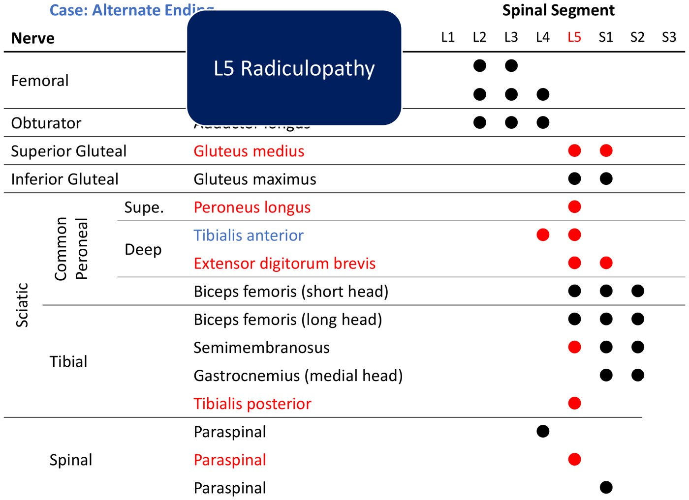
Ending 2: gluteus medius (superior gluteal), semimembranosus and tibialis posterior (tibial) and the L5 paraspinals are also abnormal: several nerves, one root → L5 radiculopathy (from the fall onto the back). Slide from the deck.What kind of injury? In ending 1, nerve conduction gets no response from the superficial fibular sensory or fibular motor studies. EMG shows lots of abnormal spontaneous activity (denervation) and no voluntary motor units in the fibular muscles. That's an axonal injury: "common fibular axonopathy at the fibular head". A few weeks out you can't yet tell axonotmesis from neurotmesis; recovery a year later would prove the nerve was in continuity. The skill is knowing when to intervene while it can still help, rather than waiting two or five years to find out it was neurotmesis.
Practice Questions
1. The knife wound
A knife wound to the medial arm at the elbow. Two weeks later: no sensation along the medial hand, and no contraction of abductor digiti minimi or the first dorsal interosseous (ulnar). Best management? → Refer to a peripheral nerve injury clinic (via PM&R/EMG or plastics). A laceration probably means neurotmesis of the ulnar nerve, which has a poor prognosis. Not "follow 12 weeks for remyelination": this isn't a compression injury. Not ultrasound or MRI: they can miss a small but significant lesion, and the axons can be injured with the epineurium intact.
2. Hip adduction plus knee extension
Sudden unilateral weakness of hip adduction and knee extension; hip flexion and dorsiflexion are normal. Most likely lesion? → the L3 nerve root. It supplies muscles of both the obturator (adductors) and the femoral (quadriceps) nerves. An obturator lesion alone wouldn't weaken knee extension, and a femoral lesion alone wouldn't weaken adduction. Two separate nerve lesions are possible, but one lesion is more likely.
3. The tourniquet
A tourniquet at the proximal humerus, then a dense wrist drop and sensory loss in the superficial radial territory; everything else is normal. At one month, needle EMG of extensor carpi radialis longus, extensor digitorum and extensor indicis shows no denervation, but the muscles can't be activated voluntarily. Two months later the arm is fully back, as predicted. How did we know? → The EMG fits neurapraxia: a conduction block across the injury that resolves quickly with remyelination. Not conversion or factitious disorder (be careful: the same EMG fits poor effort, but this mechanism and pattern would be hard to fake). Not "12 inches at 1 inch a week": regrowth is 1 inch a month, and an axonal injury would show denervation. A compressive mechanism makes neurotmesis unlikely, but the axons could still be injured, and that would take longer.
Built from Dr. Michael Payne's “Nerve Injuries” slides (three parts) and recordings, and the module's three practice questions. The webcam corner of each slide is blanked. Notes: in the foot drop case the recording twice says the patient can't “invert” and that the “inverters” aren't firing; the slide says evert, which fits the common fibular nerve (the main invertor, tibialis posterior, is tibial and was 4+/5), so this page follows the slide. The slides equate 1 inch a month with 1 mm a day; 1 inch a month is closer to 0.8 mm a day, but both are the usual rough figures. The root charts don't all agree: the “alternative presentation” table gives abductor pollicis brevis C7–C8 and triceps C7–T1, while the recording uses C8 for abductor pollicis brevis (most texts say C8–T1) and the radial nerve slide gives triceps C7–C8. Dr. Payne's point is that real patients vary.